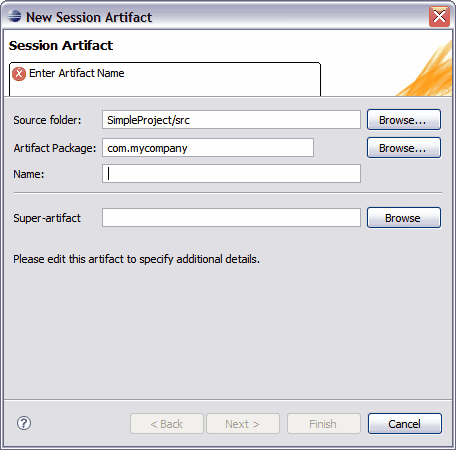

The New Session Artifact wizard allows you to create a new session facade artifact within a Tigerstripe project. Complete the following procedure to open the New Session Artifact wizard.
To open the New Session Artifact wizard and create your first session facade artifact:
- Ensure that the Tigerstripe Perspective is active. For more information, refer to Tigerstripe Perspective.
- Click Tigerstripe, select New, and click Session Facade. Alternatively, you can select the Session Facade icon on the Tigerstripe toolbar (
 ). The New Session Artifact wizard appears.
). The New Session Artifact wizard appears. - Enter a name for the session facade artifact in the Name text box and click Next to keep specifying details for the artifact or click Finish to skip all the other remaining steps in the wizard. You can specify all other artifact details by editing the artifact in the Tigerstripe Explorer in the Overview tab. For more information on editing session facade artifacts, refer to Editing Session Facade Artifacts.
The New Session Artifact wizard is different than other artifact wizards in the fact that it is a multi-step wizard allowing your to build most of the information required for a Session Facade Artifact. The steps in the wizard are outlined below:
- Step 1: General Information. This first step captures the usual information about the new Session Facade Artifact such as package, name, and project.

- Step 2: Managed Entities. This step identifies the Entities to which the Session Facade marks as managed. For more information, refer to Managed Entity Selection.
- Step 3: Exposed Named Queries. This step identifies the Named Queries through which the Session Facade exposes. For more information, refer to Named Query Selection.
- Step 4: Exposed Update Procedures. This step identifies the Update Procedures through which the Session Facade exposes. For more information, refer to Update Procedure Selection.
- Step 5: Emitted Notifications. This step identifies the Notifications to which the Session Facade marks as emitted. For more information, refer to Notifications Selection.
As with other types of Tigerstripe artifact wizards, the New Session Artifact wizard requires that you enter a set of parameters before you can successfully create your session facade artifact. The following outlines the information available on the New Session Artifact wizard.
- Source Project: the source project in which the session facade artifact is being created. In most cases, Tigerstripe is able to pre-populate this field based on the context. If not populated, or if the wrong project was selected, click Browse to select the Tigerstripe project in which the artifact is to be created.
- Artifact Package: each artifact is created within the scope of a package. This field must contain a valid package name. The New Session Artifact wizard will reject all invalid package names.
- Artifact Name: a valid name for the artifact. This name uniquely identifies the artifact within the package. The New Session Artifact wizard will reject all invalid artifact names.